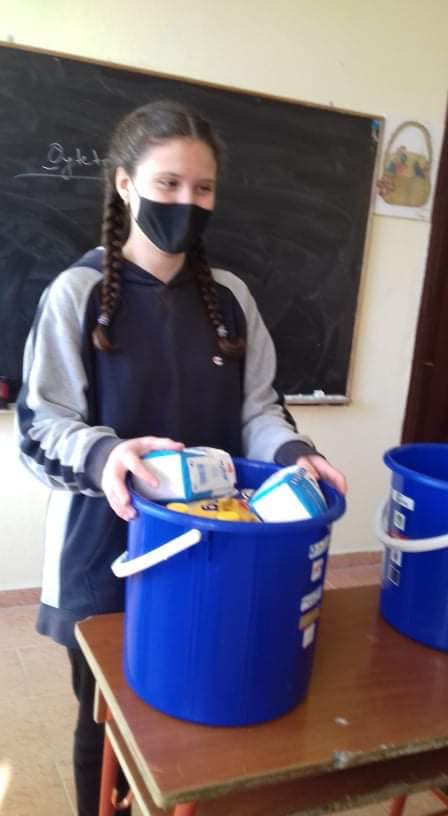

Miresevini ne website-in e Shkolles 9-vjeçare Pandeli CALE
Ne kuader te projektit "Qytetare aktive ", me motivacionin: Te denje kur te dalim ne jete per shoqerine ku do sherbejme; vullnetare e humanitare.
Klasat 9A,9B dhe 8B mbështesin nismën të bëjmë një gjysh të buzëqeshë!
#adoptagranny

PROJEKTI... "PER SHKOLLE TE SIGURT" PREZANTOHET NE TV KORÇA NGA NXENESJA DEA ZYLYFTARI
Sot ne Diten Boterore te Librit dhe nxenesit e shkolles "Pandeli Cale " japin mesazhin e tyre duke keshilluar qe te lexoni sa me shume dhe ta doni librin si mikun tuaj me te mire .Punuan materialin nxenesit e klasave te IX dhe meusese Elmira Bako.